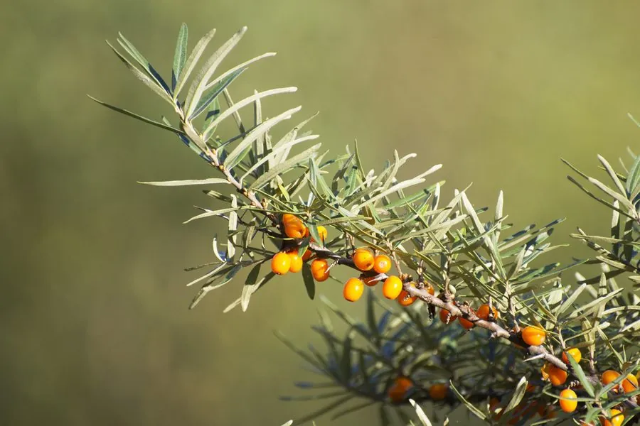

灌木与花木 · 植物界
沙棘 Hippophae rhamnoides

中国西北干旱地区常见的落叶灌木，果实橙黄、富含维生素 C，耐旱耐盐碱，是水土保持与生态经济的明星树种。
- 分类
- 门被子植物门纲木兰纲目蔷薇目科胡颓子科属沙棘属
- 栖息环境
- 海拔 500–4000 米的干旱高原、沙地与河滩，耐寒耐旱耐盐碱
- 地理分布
- 中国西北、华北及西南高原，欧洲、中亚也有分布
- 保护级别
- 暂无评估；中国未列入国家重点保护野生植物名录
物种志
沙棘为落叶灌木或小乔木，高可达 5 m，枝条具刺；叶片互生，线状披针形，背面银白色。花期 4–5 月，花小、黄绿色，先花后叶，风媒传粉；果实为浆果状核果，橙黄色或橙红色，球形或椭圆形，直径 5–8 mm，密集着生于枝条上，果期 8–10 月，可在树上越冬。
沙棘分布于中国西北、华北及西南的高原与干旱地区，也见于欧洲、中亚，喜光、耐寒、耐旱、耐盐碱、耐瘠薄，根系发达，可固氮。果实富含维生素 C、维生素 E 与多种生物活性物质，可制果汁、果酱与沙棘油，是重要的生态经济树种；沙棘林能防风固沙、保持水土，是黄土高原与荒漠化地区生态治理的先锋植物。沙棘的刺与酸性果实需注意采摘方式，嫩枝叶可作饲料。
形态与习性
- 株高可达 5 m，枝条具刺
- 花期4–5 月，先花后叶
- 果期8–10 月，浆果橙黄色
- 光照喜光，不耐长期荫蔽
- 水分耐旱，怕长期积水
- 土壤耐盐碱、耐瘠薄
- 主要用途沙棘果汁与沙棘油、防风固沙与水土保持、嫩枝叶作饲料
趣味知识
- 沙棘果实富含维生素 C，含量远高于柑橘，被称为“维C之王”之一。
- 沙棘根系发达、能固氮，是黄土高原与荒漠化地区生态治理的先锋植物。
- 沙棘的果实可在树上越冬，冬季仍能看到橙黄色果串挂在枝头。
- 沙棘的枝条带刺，采摘果实时需要戴手套并借助工具。